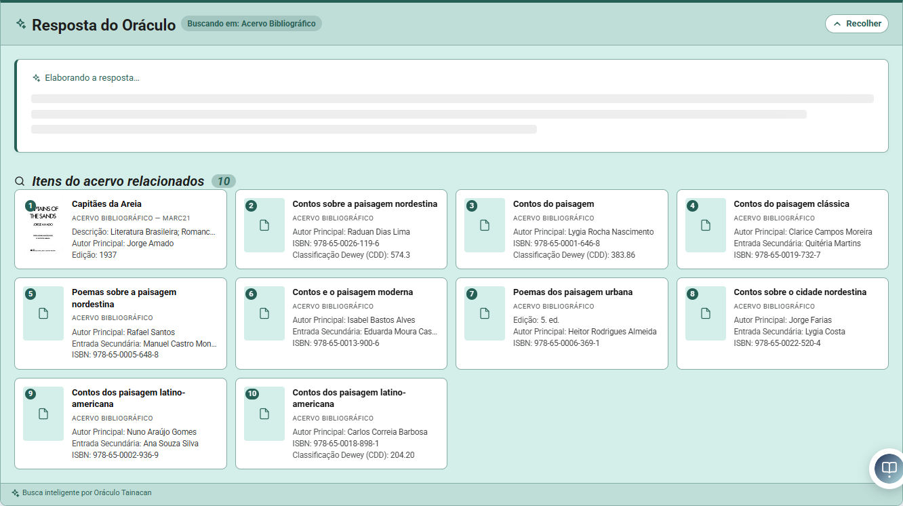
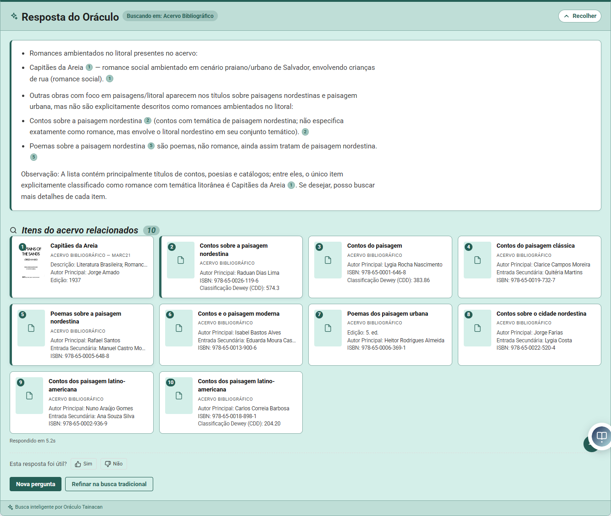
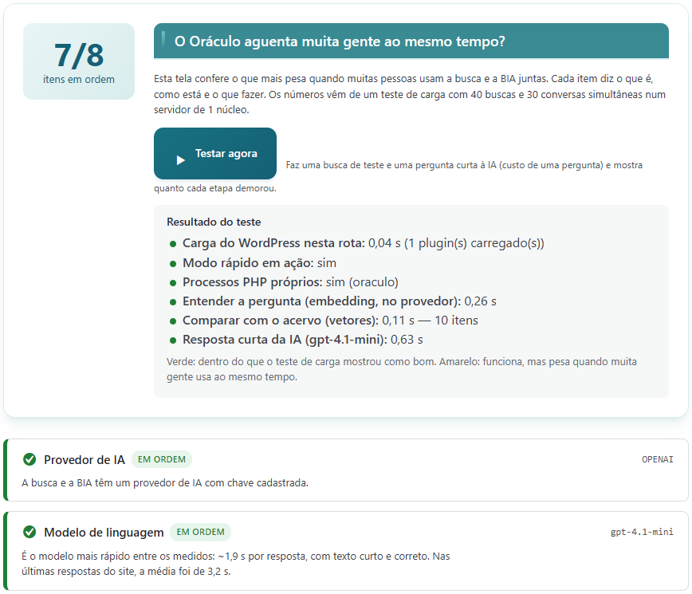
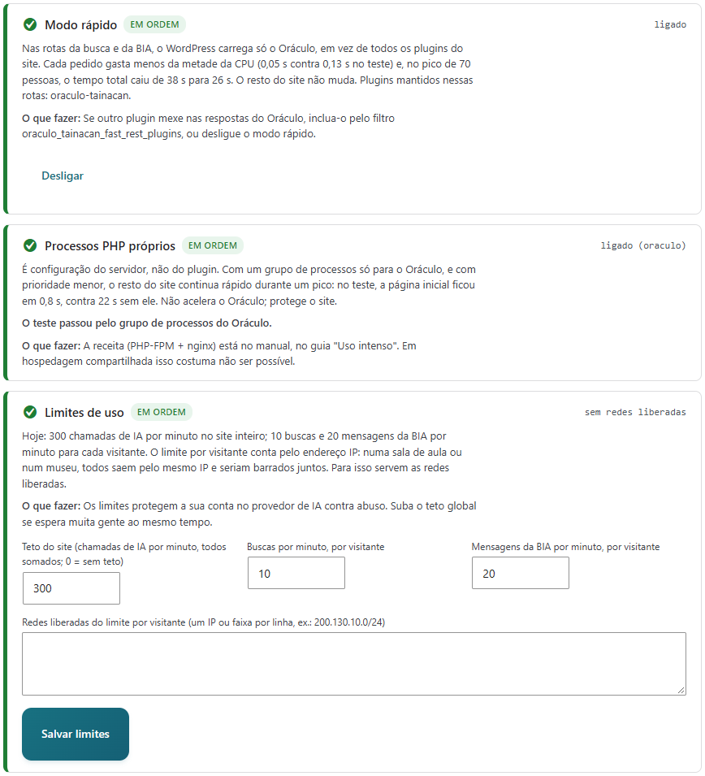

Busca em linguagem natural e assistente de conversa (BIA) para acervos Tainacan.
O Oráculo deixa o visitante perguntar ao acervo do jeito que perguntaria a uma pessoa, como “livros sobre a seca no sertão”. Ele devolve os itens mais próximos pelo sentido, e não só pelas palavras, e escreve uma síntese que cita esses itens. Tudo responde a partir do que está catalogado: o modelo de linguagem só lê os itens recuperados.
São dois momentos independentes: a indexação, que prepara o acervo uma vez e depois acompanha as mudanças, e a pergunta, que acontece a cada busca.
| Peça | O que faz | Onde se configura |
|---|---|---|
| Modelo de embedding | Transforma texto em vetor. O mesmo modelo serve o acervo e a pergunta: trocar de modelo exige reindexar. | Configurações → Provedores |
| Banco vetorial | O próprio banco do WordPress. No MariaDB 11.7+, a comparação acontece dentro do banco (seção 6). | Automático |
| Modelo de linguagem | Escreve a resposta da busca e as falas da BIA a partir dos itens encontrados. | Configurações → Provedores |
| Fila de indexação | Acompanha itens criados, editados e removidos e atualiza os vetores sozinha. | Indexação |
Provedores aceitos: OpenAI, Google Gemini, Claude (Anthropic), DeepSeek, Groq e Ollama, que roda no próprio servidor, sem enviar dados para fora. Há ainda o CLIP, da API de IA do IBRAM, para busca visual por imagem.
Desde a versão 2.12 a busca acontece em duas etapas. O modelo de linguagem responde por cerca de 85% do tempo total, então os cartões dos itens aparecem antes, e a síntese entra no mesmo painel quando fica pronta.


A BIA é a bibliotecária de IA. Aparece como um botão no canto da página, ou dentro de uma página pelo shortcode [oraculo_chat]. A diferença para a busca é a conversa:
| Shortcode | Uso |
|---|---|
[oraculo_search] | Caixa de busca com IA em qualquer página |
[oraculo_chat height="600px" collections="12,15"] | BIA embutida, com altura e coleções definidas |
Quando o campo document está marcado em Configurações → Avançado → Campos para indexar, o plugin lê o texto dos anexos de cada item e o divide em trechos de cerca de 1.600 caracteres, um conjunto por página, cada um com o seu vetor. O texto vem de três fontes, nesta ordem:
pdftotext;Na busca, o item ganha pontos pelo melhor trecho. O cartão mostra “No documento”, com o arquivo, a página e o trecho, e o link abre o PDF já naquela página. O Oráculo não faz OCR: ele só consome o OCR do Tainacan OCR Search.
wp oraculo index --collection=<id>.Até a versão 2.10, o PHP lia todos os vetores e fazia a comparação um a um. Isso limitava a busca a acervos pequenos: com 10 mil itens, eram 6,5 s e ~500 MB de memória por busca. A partir da 2.11, se o banco for MariaDB 11.7 ou mais novo, o plugin mantém tabelas laterais com o tipo VECTOR. A comparação acontece dentro do banco, e o PHP recebe apenas os ids dos mais próximos.
| Escopo da busca (38.102 vetores reais) | Antes (PHP) | Agora (no banco) |
|---|---|---|
| Acervo todo | 512 ms | 115 ms |
| Uma coleção com 30 mil itens | 419 ms | 135 ms |
| Uma coleção com 8 mil itens | 233 ms | 33 ms |
wp oraculo native drop. Esses servidores não restauram as tabelas com tipo VECTOR. No servidor novo, a busca volta ao método antigo sem nenhum ajuste.Fica em Tainacan → Oráculo. As telas são: Painel, Indexação, Configurações, Diagnóstico (seção 11), Analytics e Debug. As abas de Configurações:
| Aba | O que se ajusta |
|---|---|
| Provedores | Provedor e chave de API, modelo de linguagem e modelo de embedding; teste de conexão. |
| Geral | Ligar a busca e a BIA; quantos itens mostrar (padrão 10); similaridade mínima (padrão 0,3); limite de tokens da resposta. |
| Prompts | Instruções de sistema, de busca e de conversa, globais ou por coleção. As regras de citação [n] são acrescentadas pelo plugin. |
| Aparência | Cores e textos da BIA, posição da janela, mostrar fontes e relevância, feedback. |
| Tainacan | Aba “Busca com IA” nas listagens: rótulo, texto do campo, escopo (coleção aberta ou acervo todo), sugestões de perguntas e link direto (?oraculo_q=). |
| Avançado | Campos para indexar (incluindo o documento), tamanho do lote, tempo limite das requisições, duração do cache (padrão 1 h), modo debug e manutenção (limpar cache, limpar vetores, exportar configurações). |
Todos os comandos rodam a partir da pasta do site, com wp oraculo ….
| Comando | Para quê |
|---|---|
status | Situação geral: provedores, vetores, fila. |
index --collection=ID | Indexa ou atualiza uma coleção. |
documents index|status --collection=ID | Trechos dos PDFs: indexar ou ver o que falta (inclui PDFs que precisam de OCR). |
queue | Fila da indexação automática. |
native status|sync|rebuild|drop | Busca no banco: situação, preencher agora, refazer do zero, remover (antes de levar o banco para outro servidor). |
search "pergunta" --limit=5 | Testa uma busca completa pelo terminal, com tempo e fontes. |
test_connection · providers | Confere chaves e modelos dos provedores. |
clear_vectors [--collection=ID] | Apaga vetores, de uma coleção ou de todas. Depois, reindexe. |
stats · export · optimize | Estatísticas de uso, exportação e manutenção das tabelas. |
| Sintoma | Causa provável | O que fazer |
|---|---|---|
| Nenhum resultado para nada | Coleção não indexada, ou modelo de embedding trocado sem reindexar | wp oraculo status; reindexar a coleção |
| Item novo não aparece | A fila ainda não rodou (o cron roda a cada 5 min) | wp oraculo queue; conferir se o WP-Cron roda no servidor |
| Busca lenta (vários segundos antes dos cartões) | Busca no banco desligada ou ainda preenchendo | wp oraculo native status; se preciso, native sync |
| Cartões rápidos, síntese demorada | Normal: é o modelo de linguagem (~2 s com gpt-4.1-mini, ~6 s com gpt-5-nano) | Modelo recomendado em Provedores; menos itens em Geral (contexto menor) |
| “Muitas requisições” | Limite por visitante (10 buscas/min) ou teto do site (300 chamadas de IA/min) | Esperar um minuto; ajustar em Diagnóstico → Limites de uso, ou liberar a rede da escola/museu |
| Site inteiro lento quando muita gente usa a IA | Busca e páginas disputam os mesmos processos PHP | Seção 11: modo rápido e processos PHP próprios |
| PDF não é encontrado pelo conteúdo | PDF digitalizado sem OCR, ou campo “document” desligado | wp oraculo documents status --collection=ID; rodar o OCR |
| Resposta “estranha” | A IA só fala do que achou: o problema costuma estar nos dados | Ver os cartões: se não são pertinentes, rever metadados e campos indexados |
Cada pergunta prende um processo PHP do servidor enquanto espera o provedor de IA responder. Com muita gente ao mesmo tempo, esses processos acabam, as perguntas entram em fila e o resto do site fica lento junto. Para medir, disparamos 40 buscas e 30 conversas com a BIA contra o site de testes (VPS de 1 núcleo e 4 GB) e repetimos com cada ajuste.
| Configuração | Tudo atendido | Cartões | Busca completa | BIA | Página inicial |
|---|---|---|---|---|---|
| Antes (6 processos, gpt-5-nano, todos os plugins) | 64 s | 10,6 s | 48 s | 27 s | 22,6 s |
| + modelo gpt-4.1-mini | 40 s | 7,8 s | 32 s | 18,5 s | 10,7 s |
| + processos PHP próprios | 38 s | 10,5 s | 31 s | 22 s | 0,8 s |
| + modo rápido (a configuração recomendada) | 26,5 s | 4,9 s | 22 s | 14 s | 0,7 s |
Tempos por pessoa: mediana (metade esperou menos). Nenhum dos 770 pedidos dos testes falhou.
| Configuração | Cartões | Busca completa | BIA | Página inicial |
|---|---|---|---|---|
| Antes | 6,8 s | 19,4 s | 9,6 s | 5,2 s |
| Recomendada | 0,9 s | 3,0 s | 2,2 s | 0,8 s |
Espalhadas por um minuto inteiro, as duas configurações atendem como se houvesse uma pessoa só (cartões em 0,6–0,7 s). A diferença aparece nos picos.
Na mesma VPS, sem placa de vídeo: qwen2.5 1.5B levou 58–70 s e afirmou que dois livros tratavam de Brasília (não tratavam); qwen3-vl 2B, 210 s, com links inventados. O Ollama atende uma pergunta por vez: 70 pessoas esperariam mais de uma hora. Serve para tarefas em segundo plano ou num servidor com GPU, não para a busca ao vivo.
wp-content/mu-plugins). Os processos PHP próprios são configuração do servidor.Em Tainacan → Oráculo → Diagnóstico, cada item mostra a situação (verde, amarelo, vermelho), o que ela significa e o que fazer. O botão Testar agora faz uma busca de teste pelo mesmo caminho do visitante e mede cada etapa; é ele que confirma o modo rápido e os processos próprios funcionando de verdade.


Para quem administra o servidor. Em hospedagem compartilhada isso costuma não ser possível; o Oráculo funciona igual, só sem a proteção do resto do site.
1. Um grupo de processos novo, cópia do grupo do site (mesmo usuário), em /etc/php/8.2/fpm/pool.d/zz-meusite-oraculo.conf:
[meusite-oraculo] listen = 127.0.0.1:17101 ; porta livre user = meusite group = meusite pm = ondemand pm.max_children = 10 ; num núcleo só, mais que 10 não ajuda process.priority = 10 ; as páginas do site passam na frente env[ORACULO_PHP_POOL] = oraculo ; é por ela que o Diagnóstico reconhece o grupo
2. No nginx, no nível http (um arquivo em sites-enabled serve), escolha o grupo pelo endereço:
map $request_uri $meusite_php {
~^/wp-json/oraculo/ 127.0.0.1:17101; # site em subpasta: ~^/subpasta/wp-json/oraculo/
default 127.0.0.1:17001; # o grupo de sempre do site
}
e, no bloco location ~ \.php$ do site, troque o fastcgi_pass fixo por fastcgi_pass $meusite_php;.
3. php-fpm8.2 -t && nginx -t, recarregue os dois e clique em Testar agora: “Processos PHP próprios: sim (oraculo)”.
fastcgi_pass volta ao original. Depois de mexer no site pelo painel, rode o teste de novo.